01已完成 · 第1批
旧街石砖路面
street_stone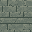

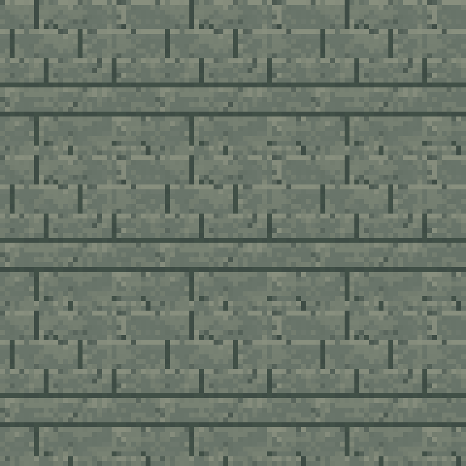
32×32 · 满幅不透明 PNG · 四向连续铺设
两岸主街、北桥接街与各支巷。
低饱和灰绿旧石砖，块面稍大，细缝和少量磨损；四边可连续重复，不能每格画独立边框。
可通行；由地图决定通路，不因砖缝产生碰撞。
assets/tiles/street_stone.png建筑统一墙体，先补齐道路、运河与双桥；整体室外贴图留作后期增强。
必画集共 18 个 PNG，已完成并复查 18 张。第 1 批连铺总览 · 第 2 批连铺总览 · 第 3 批连铺总览 · 第 4 批连铺总览 · 第 5 批连铺总览 · 两岸阶梯组合预览 · 诊所破口组合预览 · 双桥与桥栏组合预览。所有新图均采用现有 32px 方格与统一光源，地面和透明叠加层分开制作。
street_stone

两岸主街、北桥接街与各支巷。
低饱和灰绿旧石砖，块面稍大，细缝和少量磨损；四边可连续重复，不能每格画独立边框。
可通行；由地图决定通路，不因砖缝产生碰撞。
assets/tiles/street_stone.pngcourtyard_paving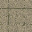
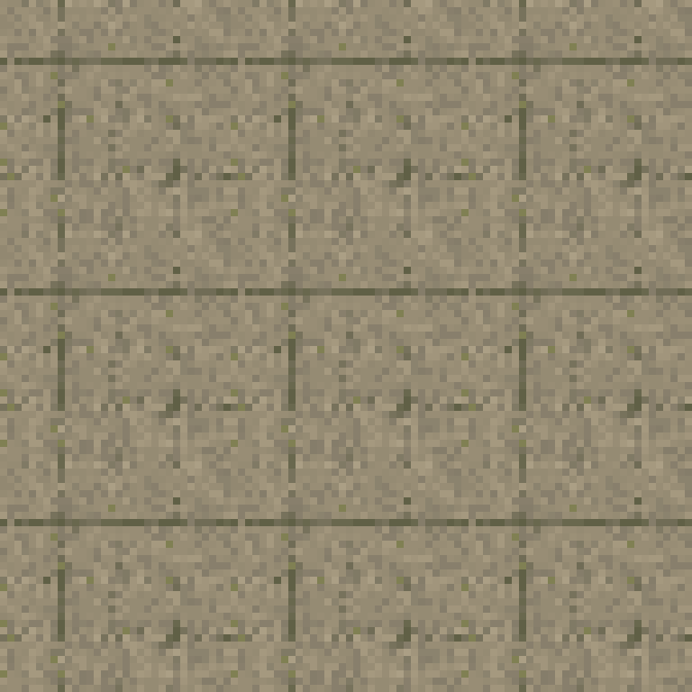
住宅小院、银行前场与服务小院。
偏暖灰的旧铺地石，少量稀疏苔色；比主街稍暖、更安静，中心留足空白，不把树、长椅画进地面。
可通行；家具与树木独立占格。
assets/tiles/courtyard_paving.pngcanal_water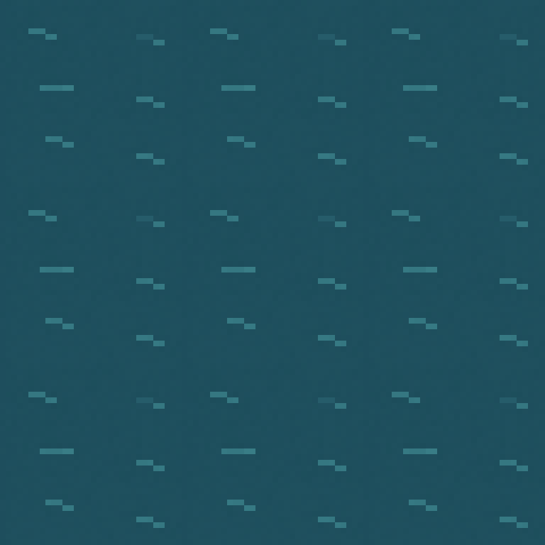
x30–35 的六格宽纵向运河，桥面覆盖其上。
深蓝青绿色、克制的小波纹，能连续拼成整条河；不画完整岸线、桥、漂浮物或大面积高光。首版一张静态纹理。
常态不可涉水，但不阻挡视线；与未来低地潮水分开。
assets/tiles/canal_water.pngquay_top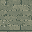
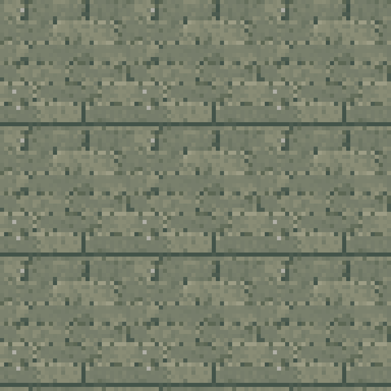
x29 / x36 河岸与仓库封闭临河背面。
灰绿旧石条、少量盐蚀，顶部平面完整铺满；岸线短立面由独立叠加件表达，不在顶面画两侧固定水边。
按设计稿 k 的不可通行边界；不是额外可走的一格河边便道。
assets/tiles/quay_top.pngcanal_bank_w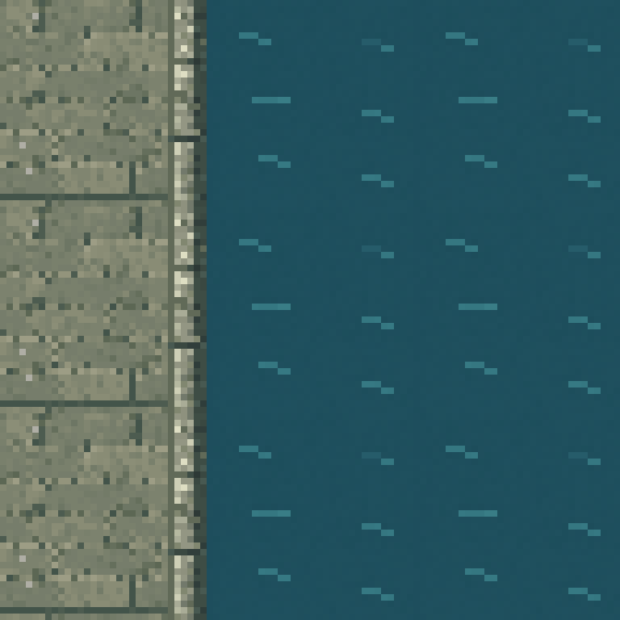
西岸 x29，水在画面右侧。
透明底的旧石岸唇与短立面、水线和少量苔痕；顶面较亮、朝水侧较暗，与通用驳岸顶面对齐，沿纵向可重复。
复用岸格边界，不新增行走空间或额外占格。
assets/props/canal_bank_w.pngcanal_bank_e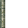
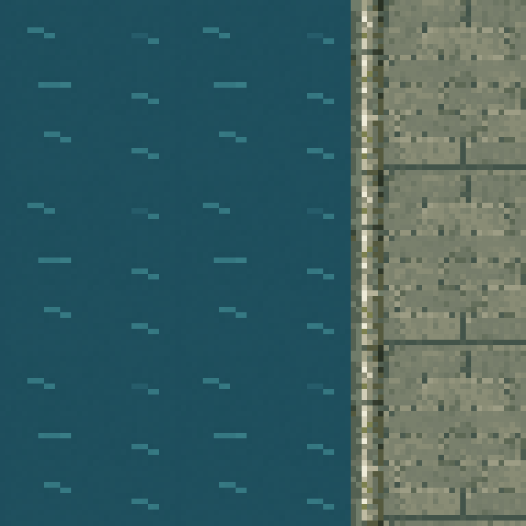
东岸 x36，水在画面左侧。
和西岸同材质的透明岸唇与水线，水在左；保持左上光源，分别画朝向与明暗，不能简单镜像西岸成品。
复用岸格边界，不新增可涉水入口。
assets/props/canal_bank_e.pngbridge_stone_deck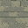
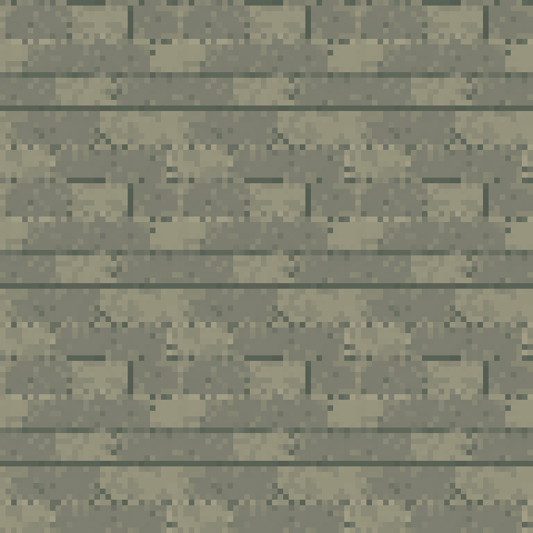
x29–36、y12–15，8×4 格桥面。
结实的灰褐石桥铺面，块面与主街有区别但同属旧街材料；表面平坦，不把侧栏、投影或整座桥画进单格。
保持四格净通行宽，常态稳定。
assets/tiles/bridge_stone_deck.pngbridge_wood_deck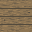
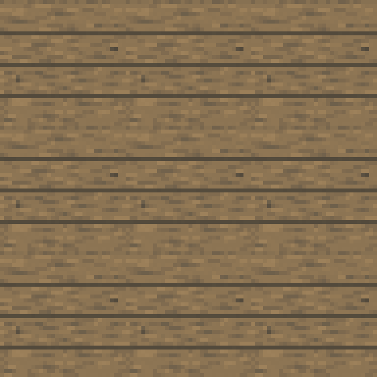
x29–36、y40–42，8×3 格桥面。
旧褐色木板、粗接缝与少量磨损，木纹横向；略旧但不画可坠落大洞，首版整桥可通行。
保持三格净通行宽；本轮没有桥面失效逻辑。
assets/tiles/bridge_wood_deck.pngbridge_stone_rail_n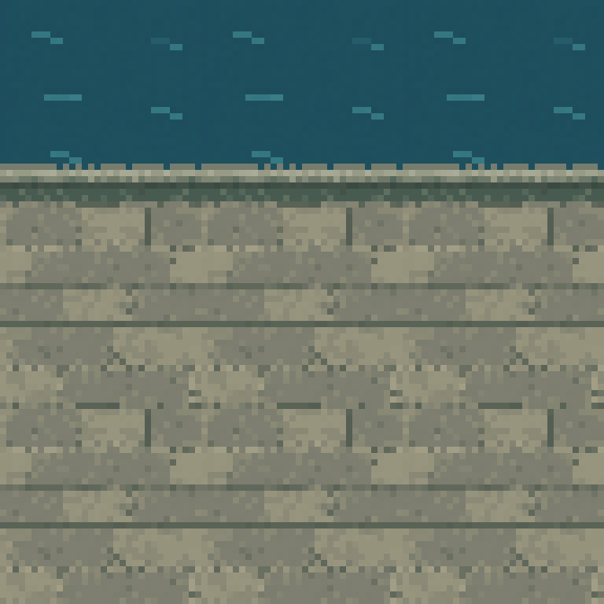
北石桥北侧外缘，沿跨河方向连续。
低矮石栏/石缘的透明连续段，表现顶部和短立面；留出真实水面透明区域，固定左上光照。
在四格桥面净宽之外布置，不把桥面挤成两格。
assets/props/bridge_stone_rail_n.pngbridge_stone_rail_s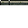
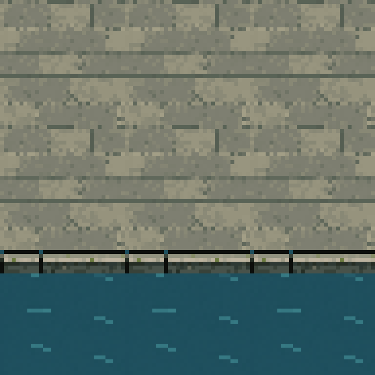
北石桥南侧外缘，沿跨河方向连续。
与北侧同材质，南向短立面更清楚；透明背景，和桥面下缘对齐，不能旋转北侧贴图改变光源。
位于净通行范围外，碰撞与桥边界一致。
assets/props/bridge_stone_rail_s.pngbridge_wood_rail_n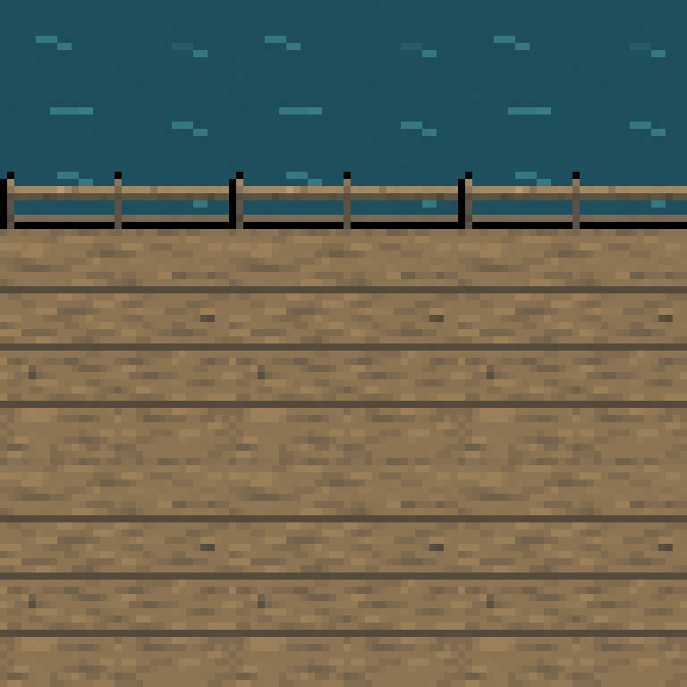
南栈桥北侧外缘。
旧木栏杆与细立柱，透明间隙保留水面；结构完整、低饱和，不画断桥或封路杂物。
放在三格净通行范围外。
assets/props/bridge_wood_rail_n.pngbridge_wood_rail_s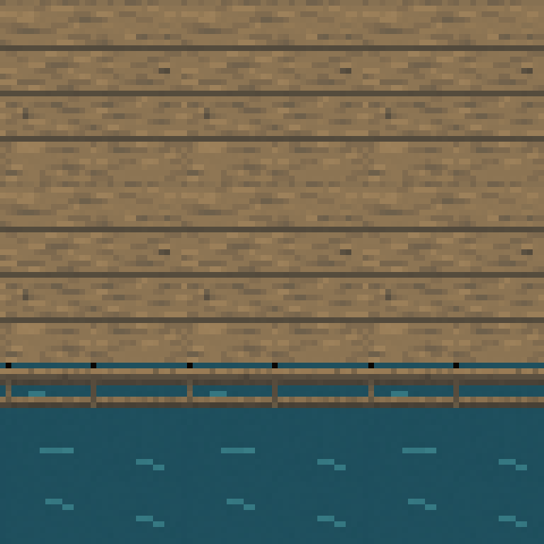
南栈桥南侧外缘。
和北侧相同木材与间距，按南侧视角重新处理前立面和高光，透明背景。
放在三格净通行范围外，不因栏杆额外封路。
assets/props/bridge_wood_rail_s.pngcanal_steps_w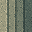
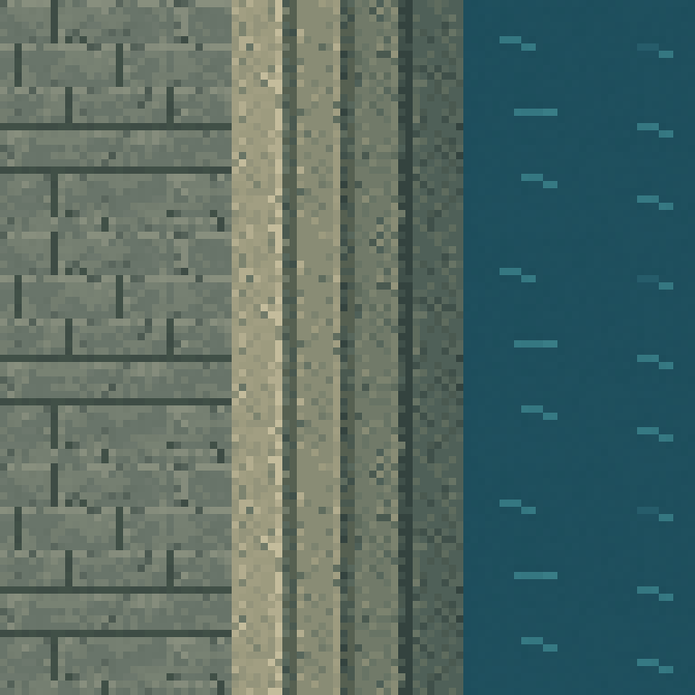
(29,27)–(29,29)，西岸通向右侧水面。
旧石阶的顶面、短踏步立面和盐蚀，方向朝右下到河边；沿三格位置组合时高度关系连续，画布满幅。
复用 s 的阶梯落脚区；水面仍不可走，本轮不制作涨水动画。
assets/tiles/canal_steps_w.pngcanal_steps_e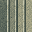
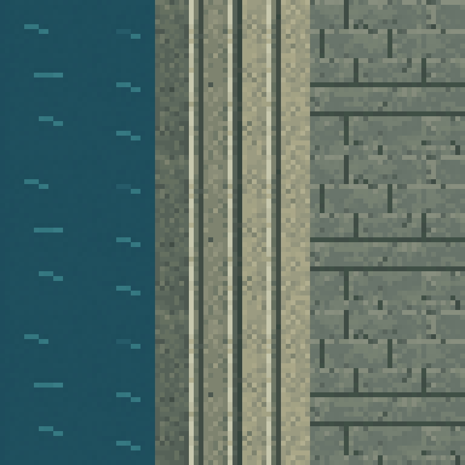
(36,23)–(36,25)，东岸通向左侧水面。
与西岸同材质，踏步朝左下降；维持固定左上光源、上帝视角及短立面，不能仅镜像西岸明暗。
只覆盖既有阶梯落脚区，不连接成第三条过河路线。
assets/tiles/canal_steps_e.pngshop_window_ns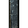
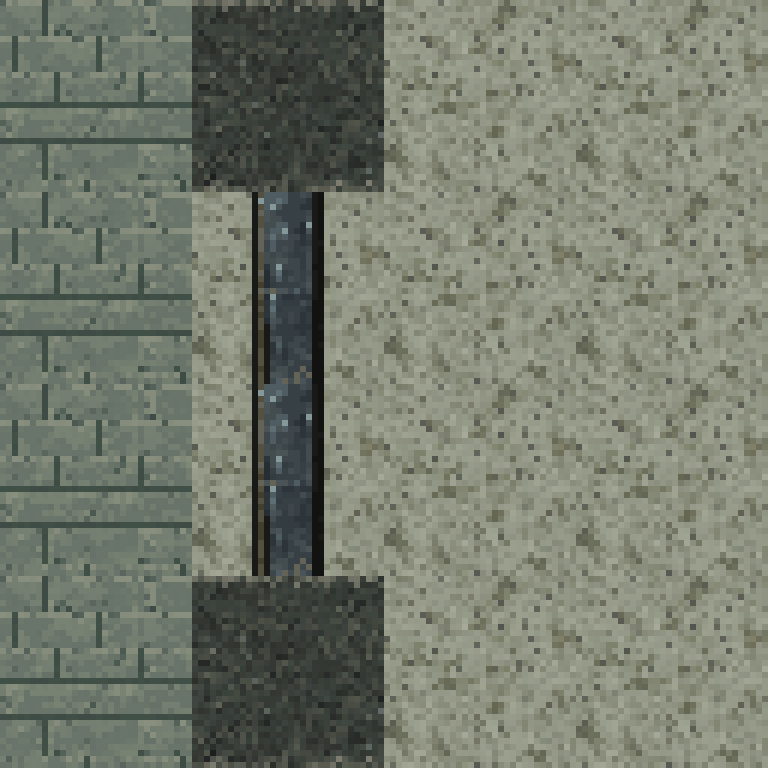
x44 的南北向墙，y18–19 与 y23–24，两组两格展示橱窗。
旧金属/木窗框、低亮度青灰玻璃与少量反光；作为可连续拼接的竖向窗段，背景透明，展柜保持独立物件，不把店内画死。
不可通行但可透视；不能按不透明墙或普通门处理。
assets/props/shop_window_ns.pngwall_breach_n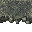

诊所东墙两格破口 (14,39)–(14,40) 的北侧端头。
通用墙材的上端断口，露出少量碎砖和短立面；透明底，碎砖只在墙体端头，不侵入门洞通路。
沿用剩余墙体占格，不缩小两格破口的净宽。
assets/props/wall_breach_n.pngwall_breach_s
同一两格破口的南侧端头。
同材质南侧断墙端头，保留顶面和短立面，左上照明一致；透明底，不靠旋转另一端凑图。
破口为已有通路，无破墙交互，不增加阻挡。
assets/props/wall_breach_s.pngrubble_decal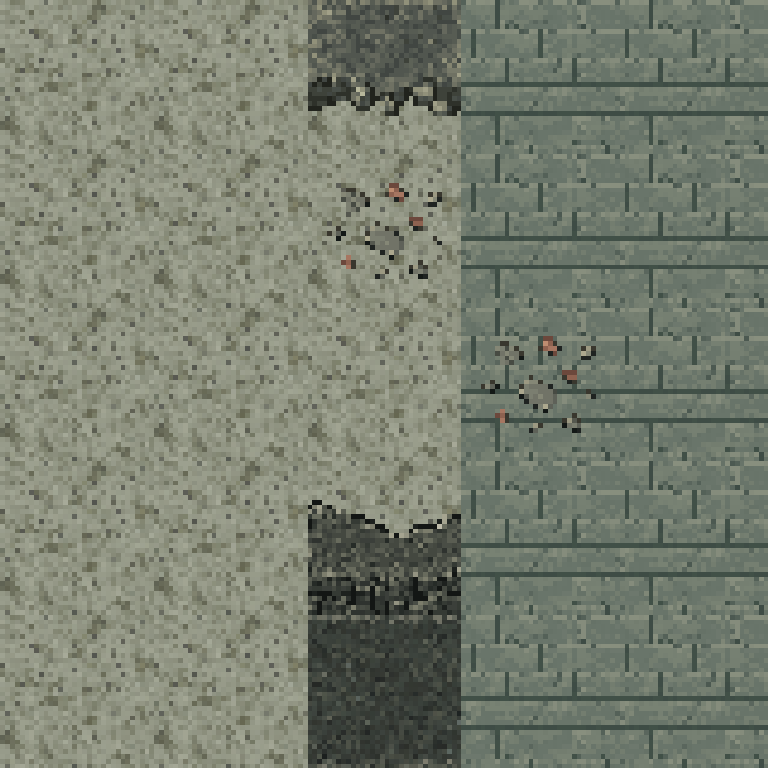
诊所破口附近少量贴地碎石，亦可少量复用于旧街角落。
稀疏、扁平的碎砖与石屑，透明背景、硬边像素，不画大块高障碍，不把整块地面画进贴花。
ground:true 语义的贴地装饰，不阻挡行走和视线。
assets/props/rubble_decal.png首版使用统一墙体与室内地板。以下 24 个文件均已确认存在；缩略图直接读取当前项目 PNG。

覆盖五栋建筑及背景铺面，首版不增加建筑专属墙皮。

公寓、诊所、钟表店、银行与仓库先共用；专用木地板、瓷砖后补。

用于边缘空地、杂物区和小院泥土留白，和新铺装形成材质区分。

可作局部潮湿角落的占位；不替代清晰可辨的运河水面，不因使用此图自动触发潮汐。


现有正向/侧向 × 开/关继续使用。两格门洞接入时须处理共用门框，不能直接排成两扇互不相干的一格门。


可复用为银行安保/金库门视觉。是否沿用避难门逻辑须在接入阶段单独决定，贴图本身不附加门禁或钥匙。


现有 41 个容器点位沿用七种场景贴图，本次不重绘容器。


复用已存在的四类摆设；其余设计稿物件另列，不能假定已经有图。

两处撤离点共用现有贴地标记。
这些变化用来减少重复感、区分房间材质或修饰端头，不是首批地图成立的前提。
| 名称 | 建议文件 | 说明 |
|---|---|---|
| 旧街路面磨损变体 A | assets/tiles/street_stone_alt_01.png | 保持基础路面边缘一致，只变化中心磨损，减少大街重复感。 |
| 旧街路面磨损变体 B | assets/tiles/street_stone_alt_02.png | 少量细裂缝和补丁，不做独立凸起砖块或可穿洞。 |
| 庭院铺装变体 | assets/tiles/courtyard_paving_alt.png | 轻微苔色、少量土斑，四边与基础铺装相容。 |
| 旧木板地面 | assets/tiles/floor_wood.png | 通用平行木板，供住宅、商铺、公共室内或木步道组合使用；统一灰棕色组，不绑定建筑。 |
| 灰色方砖地面 | assets/tiles/floor_ceramic.png | 通用低饱和方砖，供家居、公共建筑和商铺等使用；污渍与裂缝优先作为独立叠加件，不绑定诊所。 |
| 岸线北向收口 | assets/props/quay_cap_n.png | 用于桥头、阶梯处岸线的局部端头；首版先用基础岸线组合。 |
| 岸线南向收口 | assets/props/quay_cap_s.png | 与北向收口配套，保持照明和石材尺度。 |
| 正向橱窗段 | assets/props/shop_window_ew.png | 当前设计没有东西向展示窗，留给后续调整，不计入必画。 |
| 墙面旧化贴片 | assets/props/wall_damage_decal.png | 裂纹、盐斑等稀疏表面装饰，不为每栋楼增加独立墙体。 |
| 潮湿水渍地贴 | assets/props/damp_stain_decal.png | 只做环境痕迹，不附带潮汐、减速或碰撞规则。 |
| 建筑 | 格子包围盒 | 基准像素尺寸 | 必须保留 |
|---|---|---|---|
| 老公寓整体室外贴图 | 14×16 格 | 448×512 px | 保持凹入后院、南侧正门与东侧后巷门。 |
| 诊所整体室外贴图 | 10×12 格 | 320×384 px | 保留北门和东侧两格破口，避免装饰遮住备用路线。 |
| 钟表店整体室外贴图 | 11×10 格 | 352×320 px | 突出临街橱窗与招牌轮廓，前店后仓仍可切换观察。 |
| 银行整体室外贴图 | 16×16 格 | 512×512 px | 突出厚重入口与立面，保留西侧正门、南侧后门和建筑切角。 |
| 仓库整体室外贴图 | 10×10 格 | 320×320 px | 保留北侧装卸口、东侧侧门和封闭临河背面。 |
这里的 5 项是建筑外观任务，不是固定 5 个成品文件。屋顶与立面分层后的具体拆图，待正式制作时再确定。
设计稿中还有 7 类独立物件已补齐专用素材并保留实体占格，共涉及 22 处摆放点。桌、椅、货架和桶已列在复用清单。
| 物件类别 | 设计稿类型 | 摆放数量 |
|---|---|---|
| 床 / 诊疗床 | bed | 3 |
| 灶台 | stove | 1 |
| 沙发 | sofa | 1 |
| 长椅 | bench | 6 |
| 展示柜 | display | 2 |
| 柜台 | counter | 5 |
| 树木 | tree | 4 |
查看本批10张家具原稿与成品 · 查看14种家具三向图，另含独立安保监控台。住宅床与诊疗床已分别绘制。独立家具和树木遵守场景占格与 75° 倾斜俯视规范，不应画进地面或整栋建筑图。